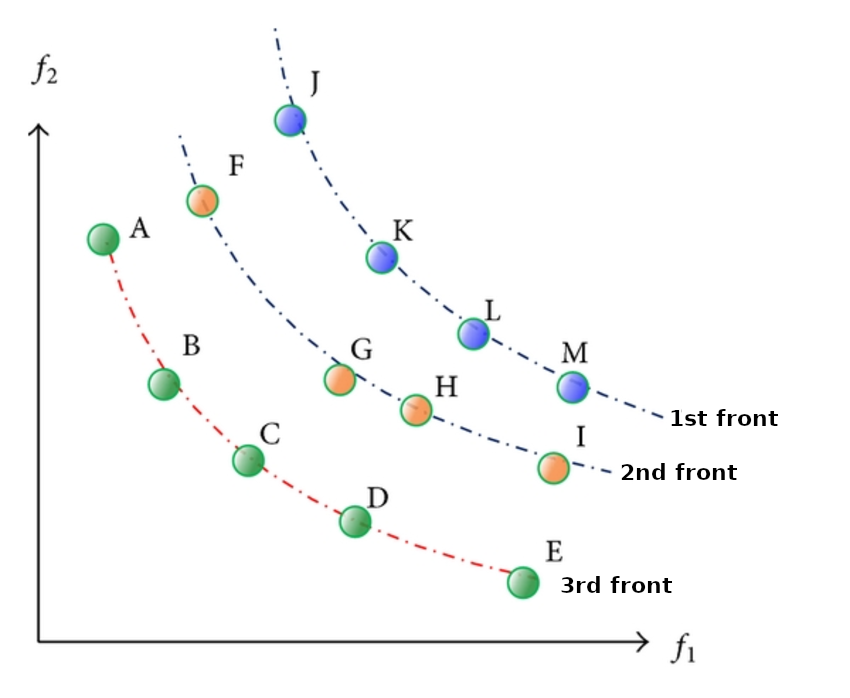
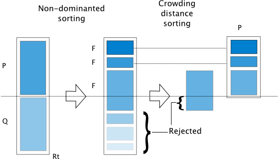

<!DOCTYPE html>
<html lang="en">

<head>
    <meta charset="utf-8" />
    <meta name="viewport" content="width=device-width, initial-scale=1.0, maximum-scale=1.0, user-scalable=no" />

    <title>Multi-objective Optimization</title>
    <link rel="shortcut icon" href="./favicon.ico" />
    <link rel="stylesheet" href="./dist/reveal.css" />
    <link rel="stylesheet" href="./static/css/reset.css" />
    <link rel="stylesheet" href="./static/css/evo.css" />
    <!-- <link rel="stylesheet" href="/_assets/evo" id="theme" /> -->
    <link rel="stylesheet" href="./css/highlight/zenburn.css" />

    <link rel="stylesheet" href="././_assets/static/css/evo.css" />
    <link rel="stylesheet" href="././_assets/static/css/reset.css" />

</head>

<body>
    <div class="reveal">
        <div class="slides"><section  data-markdown><script type="text/template">

## Multi-objective Optimization

Pareto dominance, NSGA-II

**ISAE-SUPAERO, SD**

Dennis WILSON

Yuri LAVINAS

</script></section><section  data-markdown><script type="text/template">

## Multi-objective Optimization

Optimizing **two or more** objective functions **simultaneously**.


+ Multi-objective evolutionary algorithms
+ Pareto dominance
+ NSGA-II
+ Many-objective optimization
    + If F(x) = f_1(x), f_2(x), ...

</script></section><section  data-markdown><script type="text/template">

## Multi-objective evolutionary algorithms

+ **SPEA2**: Zitzler, Eckart, Marco Laumanns, and Lothar Thiele. "SPEA2: Improving the strength Pareto evolutionary algorithm." TIK-report 103 (2001).
+ **NSGA-II**: Deb, Kalyanmoy, et al. "A fast and elitist multiobjective genetic algorithm: NSGA-II." IEEE transactions on evolutionary computation 6.2 (2002): 182-197.
+ **MOEA/D**: (2007) Zhang, Qingfu, and Hui Li. "MOEA/D: A multiobjective evolutionary algorithm based on decomposition." IEEE Transactions on evolutionary computation 11.6 : 712-731.
+ **SMS-EMOA**: Beume, N., Naujoks, B., & Emmerich, M. (2007). SMS-EMOA: Multiobjective selection based on dominated hypervolume. European Journal of Operational Research, 181(3), 1653-1669.

</script></section><section  data-markdown><script type="text/template">

## Pareto Dominance


+ A solution is said to Pareto dominate another if it is more optimal in all
dimensions.
+ Solutions which are not dominated by any other are called "non-dominated".

</script></section><section  data-markdown><script type="text/template">

## Why do we care about Pareto dominance?

+ In single-objective problems it's easy to find the highest performing individual - highest fitness.
+ In multi-objective problems the the highest performing individual in an objective could be horrible in another objective!
    + Without prior information, given F(x) and F(y):
    + We can have f_1(x) < f_2(y) and f_1(x) > f_2(y). x and y are equally good.
    
</script></section><section  data-markdown><script type="text/template">

## Pareto Front


The Pareto Front is the set of Pareto Optimal solutions.

In multi-objective optimization, we search for the Pareto Front.

</script></section><section  data-markdown><script type="text/template">

## NSGA-II


<small>
UImage from: "Hydraulic Optimization of Double Chamber Surge Tank Using NSGA-II"
</small>

</script></section><section  data-markdown><script type="text/template">

## Non-dominated Sorting



<small>
    Wang, H. S., C. H. Tu, and K. H. Chen. "Supplier selection and production planning by using guided genetic algorithm and dynamic nondominated sorting genetic algorithm II approaches." Mathematical Problems in Engineering 2015 (2015).
</small>

</script></section><section  data-markdown><script type="text/template">

## Crowding Distance Assignment 


<br>
<small>
    https://pymoo.org/algorithms/moo/nsga2.html
</small>

</script></section><section  data-markdown><script type="text/template">

## NSGA-II main components

<!--  -->

<!--  -->

<br>
<small>
    https://pymoo.org/algorithms/moo/nsga2.html
</small>

</script></section><section  data-markdown><script type="text/template">

## Many-objective Optimization


+ When increasing beyond a small number (2-4) of objectives, the chance of fully non-dominated solutions decreases.

<small>
Ishibuchi, Hisao, and Hiroyuki Sato. "Evolutionary many-objective optimization."
<a href="https://dl.acm.org/doi/proceedings/10.1145/3205651">Proceedings of the Genetic and Evolutionary Computation Conference Companion.</a> 2019.
</small>

</script></section><section  data-markdown><script type="text/template">

## Problems with Non-Dominance


With more objectives, some objectives may be overrepresented in the non-dominated set.

<small>
Ishibuchi, Hisao, and Hiroyuki Sato. "Evolutionary many-objective optimization."
<a href="https://dl.acm.org/doi/proceedings/10.1145/3205651">Proceedings of the Genetic and Evolutionary Computation Conference Companion.</a> 2019.
</small>

</script></section></div>
    </div>
    <!-- <div id="footer-container" style="display:none;"> -->
    <div id="footer-container">
        <div id="footer">
            Stochastic Optimization
            <br />
            <a href="https://supaerodatascience.github.io/stochastic/">https://supaerodatascience.github.io/stochastic/</a>
            <br />
            <a rel="license" href="http://creativecommons.org/licenses/by-sa/4.0/"></a>
        </div>
    </div>
    <script src="./dist/reveal.js"></script>

    <script src="./plugin/markdown/markdown.js"></script>
    <script src="./plugin/highlight/highlight.js"></script>
    <script src="./plugin/zoom/zoom.js"></script>
    <script src="./plugin/notes/notes.js"></script>
    <script src="./plugin/math/math.js"></script>
    <script>
        function extend() {
            var target = {};
            for (var i = 0; i < arguments.length; i++) {
                var source = arguments[i];
                for (var key in source) {
                    if (source.hasOwnProperty(key)) {
                        target[key] = source[key];
                    }
                }
            }
            return target;
        }

        // default options to init reveal.js
        var defaultOptions = {
            controls: true,
            progress: true,
            history: true,
            center: true,
            transition: 'default', // none/fade/slide/convex/concave/zoom
            plugins: [
                RevealMarkdown,
                RevealHighlight,
                RevealZoom,
                RevealNotes,
                RevealMath
            ]
        };

        // options from URL query string
        var queryOptions = Reveal().getQueryHash() || {};

        var options = extend(defaultOptions, {"transition":"fade","transitionSpeed":"default","controls":true,"slideNumber":true,"width":"100%","height":"100%"}, queryOptions);
    </script>


    <script>
        Reveal.initialize(options);
        var footer = $('#footer-container').html();
        $('div.reveal').append(footer);
        var logo = $('#logo-container').html();
        $('div.reveal').append(logo);
    </script>
</body>

</html>
